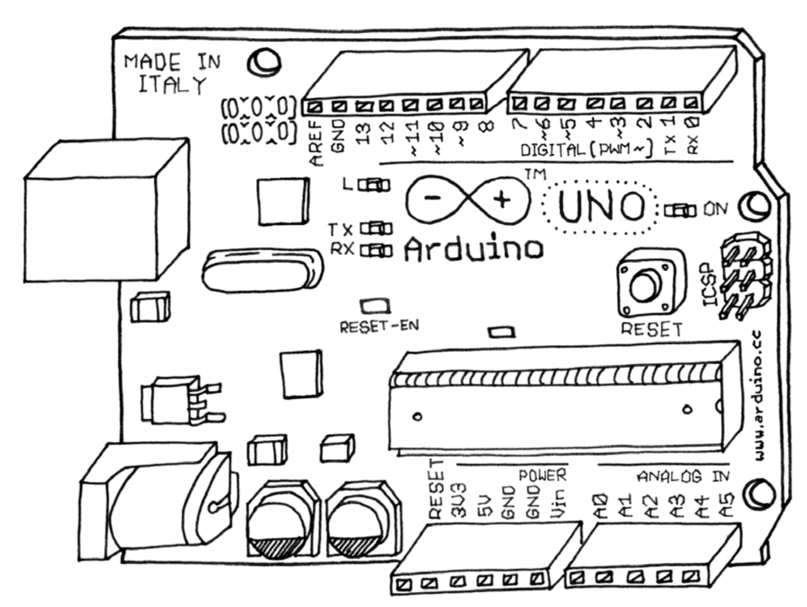
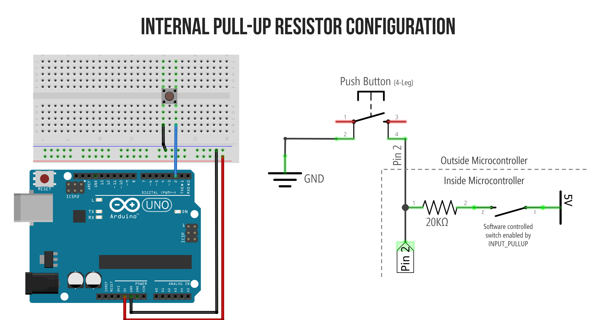

Hacking Tools
https://github.com/hackersanddesigners/tool_hacking https://hackersanddesigners.github.io/tool_hacking/build/

Arduino is...
- An open-source/-hardware microcontroller device
- Designed to sense
- Designed to control
- Easy to program
- Easy to integrate into designs
- Developed by art-technologists to be practical for simple and complex designs with minimal hassle

Input (Sensors)
- Push Buttons (digital)
- Potentiometer - turning knob
- LDR - light dependant resistor
- Flex sensors - senses bending
- PIR - senses presence, alarm system
- accelerometer - senses changes in speed
Output (Actuators)
- Leds & lights
- Speaker (beeper)
- DC motors
- Stepper motors
- Servos
- Solenoids
- Anything electronic: Transisors / Relays /
Some Terms
- ‘sketch’ – program that runs on the Arduino
- ‘pin’ – input or output connected to something, like a LED or a switch
- ‘digital’ – 1 (HIGH) or 0 (LOW) value (on/off)
- ‘analog’ – a range of voltages between 0 and 5 volts, instead of discrete on and off.
Hello World
int led = 13; void setup() { pinMode(led, OUTPUT); } void loop() { digitalWrite(led, HIGH); delay(1000); digitalWrite(led, LOW); delay(1000); }
Verify

Errors?
Upload
WOOHOO!
- Setup:
- Turn pin 13 into an output
- Loop:
- Turn on led
- Wait for a second
- Turn off led
- Wait for a second
- Start the loop over
- and over, and over, and over…
circuit

Buttons, Pull-up & Pull-down


pinMode INPUT_PULLUP
pinMode(2, INPUT_PULLUP); // Take note: LOW => pressed button
Examples Arduino
File > Examples > USB
Keyboard
#include <Keyboard.h> int buttonPin = 3; void setup() { pinMode( buttonPin, INPUT_PULLUP ); // connect the button to pin 3 Keyboard.begin(); // start the keyboard library delay(3000); // upload delay } void loop() { int pressed = digitalRead( buttonPin ); // read pin 3 if( pressed == LOW ){ // if the button is pressed Keyboard.write( 'd' ); // print the letter d delay( 100 ); // do nothing for 0.1 second } }

Fail safe
void setup() { // ... other code delay(3000); // wait a few seconds before starting the main program }
Logging out
...code
Keyboard.press(KEY_LEFT_GUI); // Shift-Q logs out: Keyboard.press(KEY_LEFT_SHIFT); Keyboard.press('Q'); delay(100); Keyboard.releaseAll(); // enter: Keyboard.write(KEY_RETURN);
code...
Keyboard
Single key:
- Keyboard.write()
Text:
- Keyboard.print()
- Keyboard.println()
Modifier keys:
- Keyboard.press()
- Keyboard.release()
- Keyboard.releaseAll()
Keyboard
- KEY_LEFT_CTRL
- KEY_LEFT_SHIFT
- KEY_LEFT_ALT
- KEY_LEFT_GUI
- KEY_RIGHT_CTRL
- KEY_RIGHT_SHIF
- KEY_RIGHT_ALT
- KEY_RIGHT_GUI
- KEY_UP_ARROW
- KEY_DOWN_ARROW
- KEY_LEFT_ARROW
- KEY_RIGHT_ARROW
- KEY_BACKSPACE
- KEY_TAB
- KEY_RETURN
- KEY_ESC
- KEY_INSERT
- KEY_DELETE
- KEY_PAGE_UP
- KEY_PAGE_DOWN
- KEY_HOME
- KEY_END
- KEY_CAPS_LOCK
- KEY_F1
- KEY_F2
- KEY_F3
- KEY_F4
- KEY_F5
- KEY_F6
- KEY_F7
- KEY_F8
- KEY_F9
- KEY_F10
- KEY_F11
- KEY_F12
Mouse Click
#include <Mouse.h> int buttonPin = 3; // Set a button to any pin void setup() { pinMode(buttonPin, INPUT_PULLUP); // Set the button as an input Mouse.begin(); // start the mouse library } void loop() { if (digitalRead(buttonPin) == LOW) // if the button goes low { Mouse.click(); // send mouse click even to the computer delay(1000); // delay so there aren't a kajillion clicks } }
Mouse Move & Click
#include "Mouse.h" int upButton = 3; int mouseButton = 4; void setup() { pinMode(upButton, INPUT_PULLUP); pinMode(mouseButton, INPUT_PULLUP); Mouse.begin(); } void loop() { if (digitalRead(upButton) == LOW ) { Mouse.move(0, -10, 0); // x, y, scrollwheel } if (digitalRead(mouseButton) == LOW) { // mouse button pressed Mouse.press(MOUSE_LEFT); } else { // mouse button released Mouse.release(MOUSE_LEFT); } // a delay so the mouse doesn't move too fast: delay(20); }
Mouse
- Mouse.click()
- Mouse.move() // movements are relative
- Mouse.press()
- Mouse.release()
- Mouse.isPressed()
#include <Keyboard.h> int buttonPin = 3; void setup() { pinMode( buttonPin, INPUT_PULLUP ); // connect the button to pin 3 Keyboard.begin(); // start the keyboard library delay(10000); // upload delay } void loop() { int pressed = digitalRead( buttonPin ); // read pin 3 if ( pressed == LOW ) { // if the button is pressed int val = analogRead(A0); // 0 - 1023 int key = map(val, 0, 1023, 65, 122); Keyboard.write( key ); // print the letter d delay( 100 ); // do nothing for 0.1 second } }